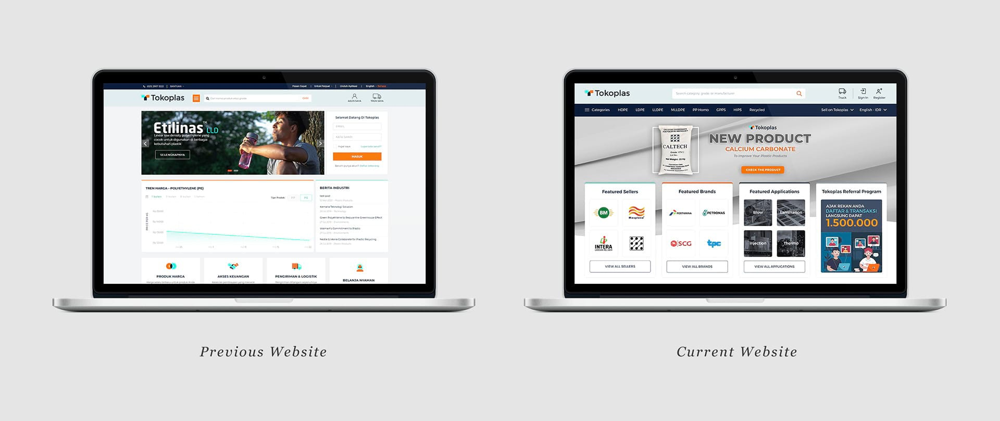
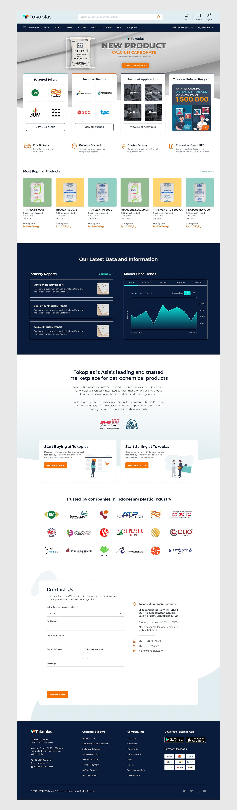

Timeline
9 months

Tokoplas is the first B2B petrochemical marketplace in Indonesia with a focus on polymer-based resin. Newly established in 2019, Tokoplas aims to connect all the business processes and market players including suppliers, customers, and partners under one single e-commerce platform.
As a lead product designer, I was tasked with redesigning the entire Tokoplas website and developing a seamless browsing and purchasing experience. My key contributions include conducting heuristic evaluation, developing sitemap, defining user flow, wireframing page layouts, producing high-fidelity mockups, and leading biweekly meetings with internal team.

For the first two weeks, I had several team meetings with the management team to get a better understanding about the problems, goals, company branding, and timeframe of the website redesign project. We highlighted several major issues of the old website based on the feedback from the customers, analysis of the team, and problems I found myself.
Major issues of the old website:
Goals for redesign:

After defining the problems and goals, we started working on content planning by creating a sitemap using GlooMaps to visually organize the content and determine whether discussed navigation paths between different pages made sense. We then grouped the large amount of content into meaningful sections and subsections.

The company had various types of plastic resin products from multiple brands and sellers to be sold. To accommodate those needs, we produced several wireframes and explored different ways to organize the products effectively into a number of different sections to ensure the customers find the products they need right from the landing page to the product details page.

We optimized the content by providing various entry points for the customers to effectively browse for plastic resins based on their categories, brands, and applications on the above the fold section. We also decided to use a full-width banner and positioned it below the navigation menu to draw their attention to the ongoing promo or new product release. In addition, we still maintained a consistent and harmonious visual style based on the existing Tokoplas brand guidelines.
 Comparison of previous and current landing page  Full page mockup of the redesigned landing pageWe improved the overall visual hierarchy and divided the content into smaller and orderly sections using card-based design to make it easier for the customers to scan the information and complete their checkout. We also streamlined the checkout process into a single page to allow the customers to check their shipping and payment more efficiently without having to go back and forth. The order summary on the right was reorganized to display the products bought with their total prices in a more concise way.
Comparison of previous and current checkout page Full page mockup of the redesigned checkout page